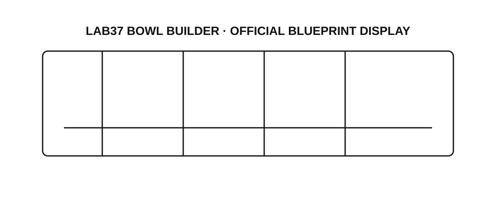

Recipe behavior
Ingredient, temperature, humidity, hold-time, portion, allergen, sanitation, and modification ranges.
Yield · variance · quality · safety · wasteIndependent candidate vision · Russell Dudek
Bowl Builder is more than a robot. It is a controlled food-production promise where order intent, recipe and food-safety requirements, mechanics, operator recovery, bowl-level evidence, and economics must remain connected.
The Recipe-to-Release AssemblyEach bowl accumulates evidence across food behavior, machine performance, order truth, operator flow, and economics before it advances.
Lab37 publicly describes a modular line where orders arrive through software, ingredients dispense by weight, cameras add intelligence, each bowl leaves a digital record, and the system closes the package.
The product question is not merely “Did the robot make a bowl?” It is: Did the complete system produce the intended food, within its operating controls, at the intended pace, with recoverable behavior, a clear evidence trail, and economics that earn the next deployment?
Every release should make the food promise safer to operate, easier to trust, and easier to scale.
The role is not only about administering a backlog. It is an opportunity to connect a multi-year roadmap, market research, competitive analysis, requirements, release evidence, customer-facing pilots, and executive narrative into one durable product operating layer.
Candidate hypothesis: The PM must install decision continuity—roadmaps, PRDs, release readiness, pilot learning, KPI definitions, business cases, and customer narrative—without slowing invention. LinkedIn figures are estimates, not internal company data.
Public reporting says Atoms is the renamed and expanded City Storage Systems, organized in part around Atoms Food. CloudKitchens, Otter, and Picnic provide publicly visible context around kitchen infrastructure, restaurant software, and meal demand.
Discovery hypothesis—not an asserted internal architecture. Lab37’s exact organizational relationship, reporting line, and product integrations are not fully documented in public sources. The useful question is where an explicit interface would create customer value.
The product earns scale when customer intent remains connected to food controls, machine execution, operating recovery, and measurable results.
Order ownership, recipe version, food-safety acceptance, machine evidence, operator recovery, or commercial outcome.
A shared contract makes acceptance, evidence, ownership, and trade-offs explicit without flattening any discipline.
The release should preserve throughput while keeping portion evidence, operator recovery, and service signals visible enough to learn from the rush.
Ingredient, temperature, humidity, hold-time, portion, allergen, sanitation, and modification ranges.
Yield · variance · quality · safety · wasteCapacity, accuracy, uptime, component life, access, fault behavior, and recovery.
Throughput · fault rate · restore timePOS input, recipe configuration, bowl record, camera evidence, fleet signal, and version state.
Completeness · traceability · alert qualityLoading, replenishment, changeover, intervention, cleaning, training, and escalation.
Touches · training · reset · adoptionLabor, waste, support, installation, reliability, customer experience, and utilization.
Payback inputs · support burden · marginOrder integration, ingredient-by-weight dispensing, camera context, per-bowl records, multi-robot coordination, packaging, operator workflow, serviceability, food controls, and economics form one learning surface.

Product-facing operating work across approximately 1,000 fielded robots, machine vision, customer support, production, quality, software issue flow, ERP, and release readiness.
Served on the Amazon Prime Now launch team with Whole Foods, earned a Food Safety Management certification while at Amazon, and built operating mechanisms for high-volume launch, throughput, safety, quality, escalation, and customer experience.
Led engineering, manufacturing, quality, customer delivery, validation, documentation, lifecycle controls, and high-reliability programs.
Turn ambiguous operating problems into agentic workflows that combine structured context, AI assistance, human judgment, escalation, evaluation, and governance.
Observe design, assembly, culinary validation, testing, operation, cleaning, support, and customer experience. Map decisions, evidence, ownership, market context, and system interfaces.
Carry one pilot or release through research, requirements, food and machine readiness, validation, customer interface, evidence, and decision close.
Install the roadmap record, product-health view, pilot review, and field-to-requirement loop that preserve product memory as the team scales.
Discovery hypothesis: Is this PM expected to optimize Bowl Builder primarily as a standalone product, or also define interfaces across the broader Atoms Food ecosystem where those connections create customer value?
As engineering headcount expands, which decisions most need durable product memory and clearer ownership?
Which system owns order intent, menu and recipe version, modification state, and completed-bowl truth?
Who owns food-safety acceptance criteria across culinary, product, engineering, customer operations, and the deployment site?
What must a pilot prove before its learning becomes reusable across recipes, machines, and restaurants?
What evidence would give a customer confidence to expand from a successful pilot to a multi-site deployment—and where does the PM own that decision?
Twelve months from now, what would make this PM indispensable to engineering, culinary, customers, operations, and commercial leadership?